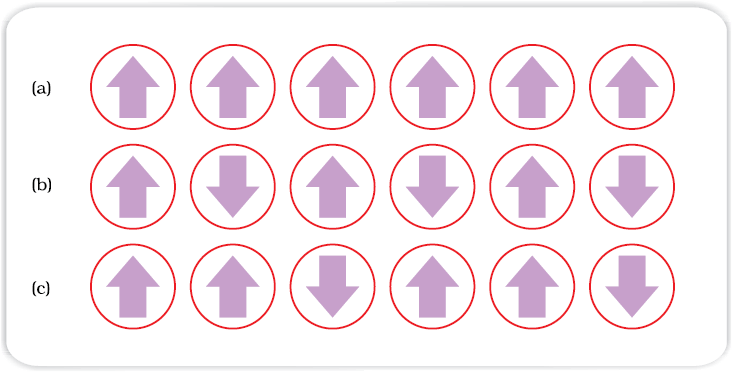

Every substance has some magnetic properties associated with it. The origin of these properties lies in the electrons. Each electron in an atom behaves like a tiny magnet. Its magnetic moment originates from two types of motions (i) its orbital motion around the nucleus and (ii) its spin around its own axis. Electron being a charged particle and undergoing these motions can be considered as a small loop of current which possesses a magnetic moment. Thus, each electron has a permanent spin and an orbital magnetic moment associated with it. Magnitude of this magnetic moment is very small and is measured in the unit called Bohr magneton, µB. It is equal to 9.27 × 10–24A m2.
On the basis of their magnetic properties, substances can be classified into five categories: (i) paramagnetic (ii) diamagnetic (iii) ferromagnetic (iv) antiferromagnetic and (v) ferrimagnetic.
Paramagnetic substances are weakly attracted by a magnetic field. They are magnetised in a magnetic field in the same direction. They lose their magnetism in the absence of magnetic field. Paramagnetism is due to presence of one or more unpaired electrons which are attracted by the magnetic field. O2, Cu2+, Fe3+, Cr3+ are some examples of such substances.
Demonstration of the magnetic moment associated with (a) an orbiting electron and (b) a spinning electron.
Diamagnetic substances are weakly repelled by a magnetic field. H2O, NaCl and C6H6 are some examples of such substances. They are weakly magnetised in a magnetic field in opposite direction. Diamagnetism is shown by those substances in which all the electrons are paired and there are no unpaired electrons. Pairing of electrons cancels their magnetic moments and they lose their magnetic character.
A few substances like iron, cobalt, nickel, gadolinium and CrO2 are attracted very strongly by a magnetic field. Such substances are called ferromagnetic substances. Besides strong attractions, these substances can be permanently magnetised. In solid state, the metal ions of ferromagnetic substances are grouped together into small regions called domains. Thus, each domain acts as a tiny magnet. In an unmagnetised piece of a ferromagnetic substance the domains are randomly oriented and their magnetic moments get cancelled. When the substance is placed in a magnetic field all the domains get oriented in the direction of the magnetic field and a strong magnetic effect is produced. This ordering of domains persist even when the magnetic field is removed and the ferromagnetic substance becomes a permanent magnet.
Substances like MnO showing anti-ferromagnetism have domain structure similar to ferromagnetic substance, but their domains are oppositely oriented and cancel out each other’s magnetic moment.
Ferrimagnetism is observed when the magnetic moments of the domains in the substance are aligned in parallel and anti-parallel directions in unequal numbers. They are weakly attracted by magnetic field as compared to ferromagnetic substances. Fe3O4 (magnetite) and ferrites like MgFe2O4 and ZnFe2O4 are examples of such substances. These substances also lose ferrimagnetism on heating and become paramagnetic.

Schematic alignment of magnetic moments in (a) ferromagnetic (b) antiferromagnetic and (c) ferrimagnetic.